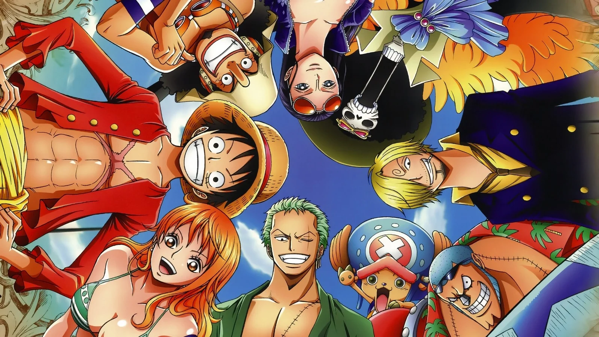
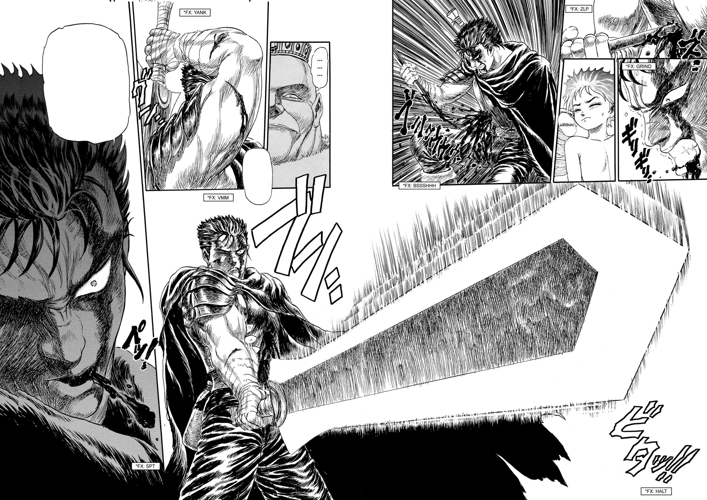

Introduction au monde des mangas
Bienvenue dans l’univers captivant des mangas, où l’aventure, le drame et la magie se rencontrent pour créer des histoires qui captivent des millions de lecteurs autour du globe. Sur notre site, nous explorons trois des séries manga les plus emblématiques et influentes de tous les temps: “One Piece”, “Naruto” et “Demon Slayer”. One Piece, créé par Eiichiro Oda, nous embarque dans les aventures maritimes de Monkey D. Luffy et de son équipage à la recherche du trésor ultime, le One Piece. Ce manga est célèbre pour ses récits épiques, son monde riche et ses personnages colorés, qui continuent de captiver les fans depuis plus de deux décennies. Naruto, de Masashi Kishimoto, raconte l’histoire de Naruto Uzumaki, un jeune ninja avec un rêve grandiose : devenir le Hokage, le leader de son village. Avec ses amis, il affronte les défis et découvre les mystères de son passé, tout en se battant pour reconnaître sa place dans un monde en conflit. Demon Slayer (Kimetsu no Yaiba) par Koyoharu Gotouge, nous plonge dans le Japon de l’ère Taisho, où Tanjiro Kamado, après que sa famille a été massacrée par des démons, cherche à sauver sa sœur transformée en démon. C’est une histoire poignante de détermination et de courage, illustrée par un art visuel stupéfiant et des combats à couper le souffle. À travers des analyses approfondies, des articles détaillés et des discussions communautaires, notre site vous invite à plonger dans ces mondes fantastiques. Que vous soyez un fan de longue date ou un nouveau venu dans le monde des mangas, il y a toujours quelque chose de nouveau et excitant à découvrir ici avec nous. Explorez, participez et partagez votre passion pour “One Piece”, “Naruto” et “Demon Slayer”!
One Piece
“One Piece” est un manga et anime japonais créé par Eiichiro Oda en 1997. Il suit les aventures de Monkey D. Luffy et son équipage, les “Chapeaux de Paille”, dans leur quête pour trouver le légendaire trésor “One Piece” et ainsi devenir le roi des pirates. La série combine action, humour et émotion, explorant des thèmes comme l’amitié et la liberté, tout en développant un monde riche et complexe peuplé de pirates, de révolutionnaires et de mystérieux pouvoirs.
Naruto

“One Piece” est un manga et anime japonais créé par Eiichiro Oda en 1997. Il suit les aventures de Monkey D. Luffy et son équipage, les “Chapeaux de Paille”, dans leur quête pour trouver le légendaire trésor “One Piece” et ainsi devenir le roi des pirates. La série combine action, humour et émotion, explorant des thèmes comme l’amitié et la liberté, tout en développant un monde riche et complexe peuplé de pirates, de révolutionnaires et de mystérieux pouvoirs.
Dragonslayer
“One Piece” est un manga et anime japonais créé par Eiichiro Oda en 1997. Il suit les aventures de Monkey D. Luffy et son équipage, les “Chapeaux de Paille”, dans leur quête pour trouver le légendaire trésor “One Piece” et ainsi devenir le roi des pirates. La série combine action, humour et émotion, explorant des thèmes comme l’amitié et la liberté, tout en développant un monde riche et complexe peuplé de pirates, de révolutionnaires et de mystérieux pouvoirs.